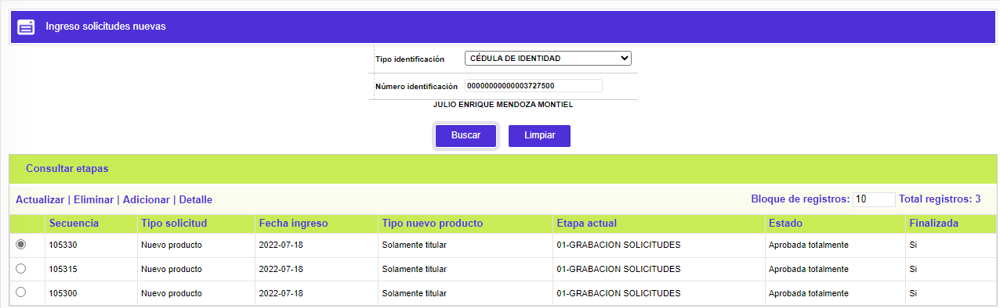
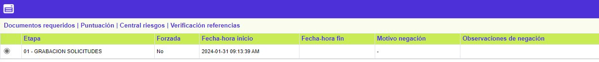

Ingreso de solicitudes Crédito nuevo
A través de este formulario la entidad captura la información referente a la solicitud de un nuevo producto como cliente principal o titular del crédito, y los clientes Adicionales que pueda llegar a solicitar éste. Inicialmente, el formulario cuenta con un filtro de búsqueda en la parte superior que traerá sólo la información de las solicitudes de Crédito nuevo que posea el cliente consultado.
|
Tipo identificación |
En este campo se selecciona de una lista de valores, el tipo de documento de identificación del cliente. |
|
Número identificación |
En este campo se debe capturar el número del documento de identificación del cliente para registrar o consultar una solicitud de crédito nuevo. Acepta máximo 16 caracteres. |

El formulario contiene los enlaces: Actualizar, Eliminar, Adicionar, Detalle, y Consultar etapas en la parte superior. Adicionalmente, existe la opción Adicionales que sólo se mostrará cuando la solicitud sea de tipo Titular con adicional. Esta opción conduce al Ingreso de Adicionales que dependen de un cliente Titular nuevo.
Adicionar: A través de esta opción el usuario puede seleccionar qué tipo de solicitud de crédito nuevo desea crear. Se despliega un formulario inicial de tres campos:
|
Tipo |
Campo obligatorio de salida que muestra el tipo de solicitud que se está ingresando. Para este formulario siempre mostrará 'Crédito nuevo'. |
|
Tipo de crédito |
Campo obligatorio que determina el tipo de solicitud de Crédito nuevo a ingresar. Puede ser Titular con adicionales, Sólo Titular, o Sólo Adicional. |
|
Producto solicitado / asignado |
Campo obligatirio en el que a través de una lista de valores poblada previamente en la opción Definición de productos, se selecciona el producto (bin, segmento, grupo) que se desea asignar, desplegando el nombre y la franquicia a la que corresponde. Una vez indicado éste, se pueblan, automáticamente, varios de los campos del siguiente formulario. |
Si el usuario selecciona el tipo de crédito nuevo de Titular con adicionales o Solo titular, el sistema mostrará el wizard de Ingreso de titulares. Si por el contrario, el usuario selecciona ingresar una solicitud de crédito nuevo para Solo adicional, o ingresa a la opción Adicionales en la parte superior de este formulario, el sistema desplegará el wizard de Ingreso de Adicionales.
Actualizar: Al activar ese enlace se despliega un wizard de tres tabs: Información general, Líneas de crédito y Documentos. Los dos primeron formularios cuentan con los botones Salvar y Cancelar, mientras que Documentos sólo cuenta con el botón Cancelar debido a que sus modificaciones se guardan internamente en el mismo formulario.
Detalle: Si el usuario invoca la opción Detalle se despliega el siguiente wizard de consulta de cuatro pasos: Información general del Titular solo o con Adicional; Líneas de crédito, Otros plásticos y Documentos. Los formualrios cuentas con botones de navegación interna en la parte inferior derecha.
Consultar etapas: Si el usuario invoca la opción la consulta de etapas se despliega el siguiente formulario, el cual se va alimentando a medida que la solicitud avanza de etapa hasta ser Aprobada.

Ingreso de Titular |Ingreso de Adicionales | Consultar etapas